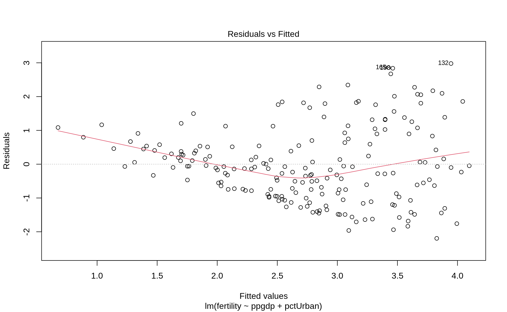
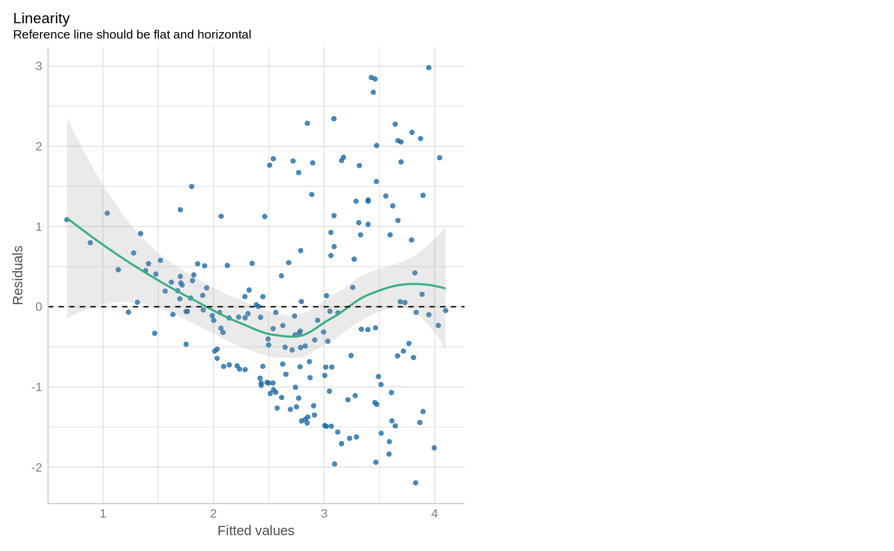
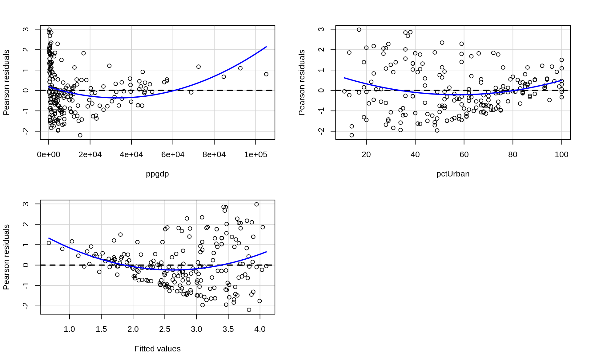
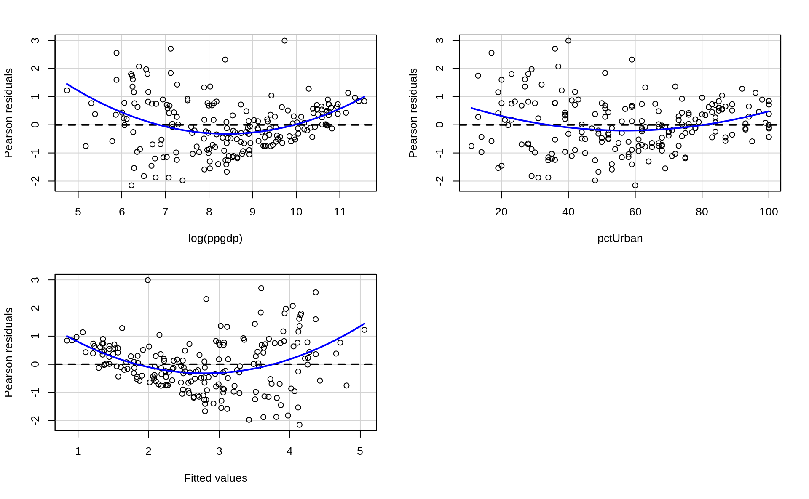
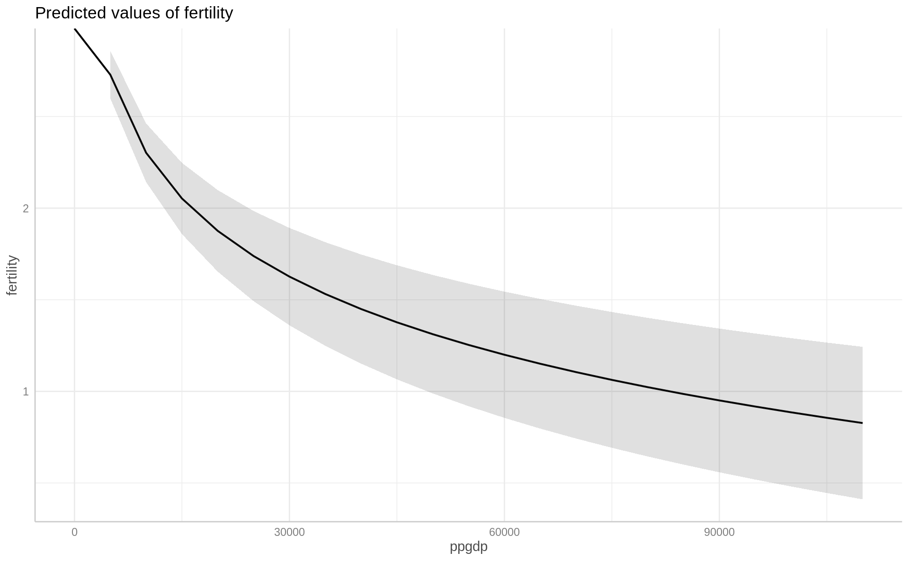
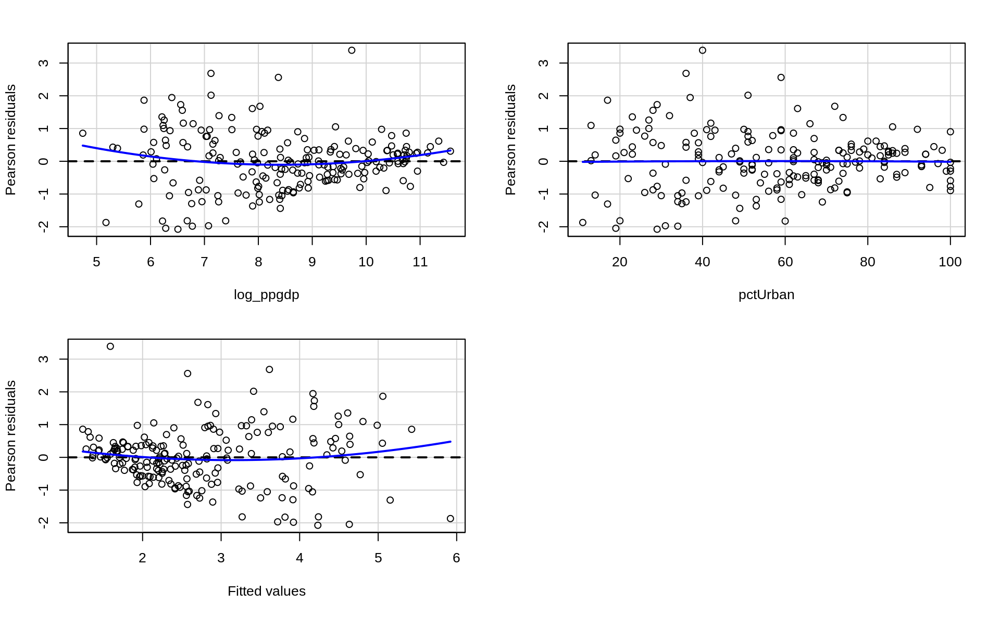
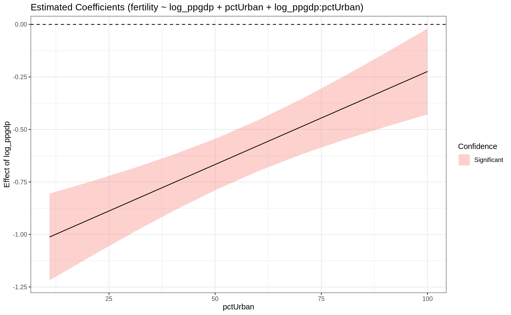
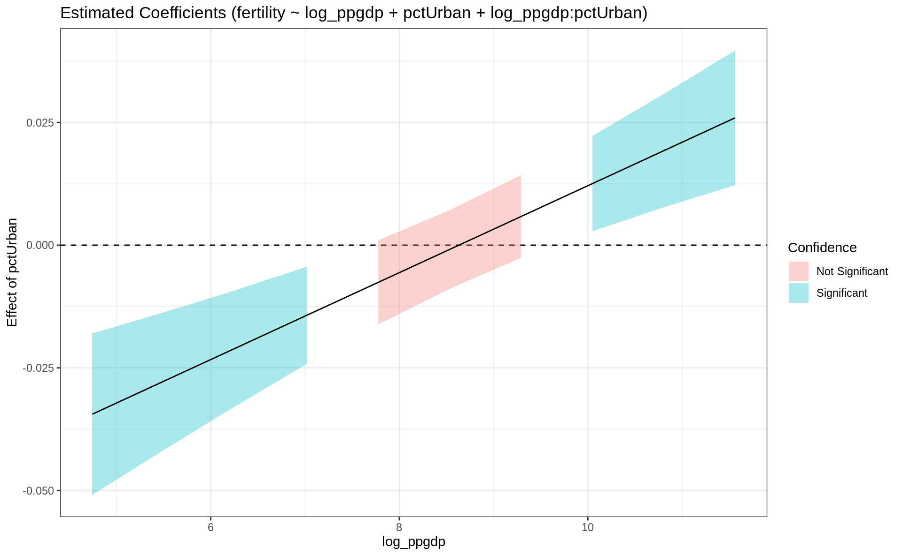
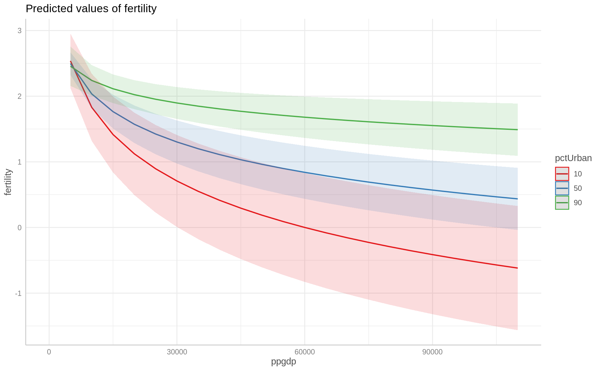

library(tidyverse) # for data wrangling
library(alr4) # for the data sets #
library(GGally)
library(parameters)
library(performance)
library(see)
library(car)
library(broom)
library(modelsummary)
library(texreg)
library(modelbased)
library(emmeans)
library(ggeffects)
ggplot2::theme_set(ggplot2::theme_bw())
knitr::opts_chunk$set(
fig.width = 10,
fig.asp = 0.618,
out.width = "100%"
)AE04-02 Multiple Linear Regression: linearity
Setup
Goals
- Perform a linear regression analysis;
- Learn how to test linearity assumption;
- Practice linear transformation;
- Practice coefficients interactions;
- Exerciser coefficients interpretation with linear transformation and or interactions;
Data
We explore UN11 data from with 199 observations.
Variables are:
fertility- number of children per woman;lifeExpF- Female life expectancy, years;ppgdp- Per capita gross domestic product in US dollars;pctUrban- Percent of Urban population;group- variable with 3 values “oecd”, “africa” and “others”;
Data loading
Code
library(alr4)
library(tidyverse)
un_dta <-
alr4::UN11 %>%
as_tibble()
glimpse(un_dta)Rows: 199
Columns: 6
$ region <fct> Asia, Europe, Africa, Africa, Caribbean, Latin Amer, Asia, C…
$ group <fct> other, other, africa, africa, other, other, other, other, oe…
$ fertility <dbl> 5.968, 1.525, 2.142, 5.135, 2.000, 2.172, 1.735, 1.671, 1.94…
$ ppgdp <dbl> 499.0, 3677.2, 4473.0, 4321.9, 13750.1, 9162.1, 3030.7, 2285…
$ lifeExpF <dbl> 49.49, 80.40, 75.00, 53.17, 81.10, 79.89, 77.33, 77.75, 84.2…
$ pctUrban <dbl> 23, 53, 67, 59, 100, 93, 64, 47, 89, 68, 52, 84, 89, 29, 45,…Model
Let us build a simple econometric model:
\[\textit{fertility} = f(\textit{ppgdp}, \textit{pctUrban})\]
Ex. 1. Regression
Check help: ?lm
# ft1 <- lm(_____ ~ ______, data = _____)Ex. 1.1 Reg. Summary with parameters and performance
# library(______)
# library(______)
# parameters(______)
# performance(______)Ex. 2. Linearity
Ex. 2.1 Checking linearity with base::plot
Important to specify argument which = 1 that makes R print only the first plot!
# plot(______, which = 1)Ex. 2.2 Checking linearity with performance::check_model
See help: ?check_model. First argument is the model, second argument check = "linearity" make sure that the function checks linearity only.
# _____(_____, check = "linearity")Ex. 2.3 Checking linearity with car::residualPlots
# library(car)
# residualPlots(_____, plot = FALSE)# _____(_____, test = FALSE)Ex. 3. Linear transformation
What variable should we first try to transform with log?
Ex. 3.1 Linear transformation of ______________
# ft2 <- lm(_______ ~ log(______) + _______, ________)Ex. 3.2 Checking linearity with car::residualPlots
# _______(_______)Has anything changed? Do we have an improvement in the linearity assumption?
Ex. 3.3 Interpretation logged variable
# parameters(_______)
# _______(ft2)Ex. 3.4 Predicted values when a regressor is transformed
?ggeffects::ggpredict
Firs argument of a function is the model, second argument is the term that we want to predict.
if we pass result of ggpredict to plot, we will get a plot of predicted values constructed for us.
library(ggeffects)
# ggpredict(_______, terms = "_______")
# _______(ft2, _______) %>% plot()Ex. 4 Introducing an interaction term
Ex. 4.1 Regression with an interaction term
# ft3a <- lm(_____ ~ log(_____) * _____, data = un_dta)We can also calculate log of the variable before regression, in the data and then use a newly calculated variable:
# ft3 <- lm(_____ ~ log_ppgdp * _____ ,
# data =
# un_dta %>%
# mutate(log_ppgdp = log(ppgdp))
# )Ex. 4.2 Checking linearity with car::residualPlots
Are there any improvement in fulfillment of the linearity assumption?
# _______(_______)Ex. 4.3 Interpretation logged variable + interaction term
# parameters(_______)
# _______(ft3)Ex. 4.4 Marginal effects
# library(modelbased)
# library(emmeans)
# estimate_slopes(_______, trend = "log_ppgdp")
# estimate_slopes(_______, trend = "_______", at = "pctUrban") %>% plot()# estimate_slopes(ft3, trend = "pctUrban")
# estimate_slopes(ft3, trend = "_______", at = "_______") %>% plot()Ex. 4.5 Predicted values
Let us use regression fit3a
# library(ggeffects)
# ggpredict(______, terms = "ppgdp")
# ggpredict(______, terms = c("______", "pctUrban [10, 50, 90]")) %>% plot()Solutions
## Regression
ft1 <- lm(fertility ~ ppgdp + pctUrban, data = un_dta)
## Reg. Summary
library(parameters)
library(performance)
parameters(ft1)Parameter | Coefficient | SE | 95% CI | t(196) | p
-----------------------------------------------------------------------
(Intercept) | 4.37 | 0.22 | [ 3.93, 4.82] | 19.49 | < .001
ppgdp | -1.30e-05 | 5.37e-06 | [ 0.00, 0.00] | -2.43 | 0.016
pctUrban | -0.02 | 4.22e-03 | [-0.03, -0.02] | -5.91 | < .001
Uncertainty intervals (equal-tailed) and p values (two-tailed) computed using a
Wald t-distribution approximation.performance(ft1)# Indices of model performance
AIC | BIC | R2 | R2 (adj.) | RMSE | Sigma
-----------------------------------------------------
612.669 | 625.842 | 0.315 | 0.308 | 1.106 | 1.114## Linearity
### Checking linearity with `base::plot`
plot(ft1, which = 1)
### Checking linearity with `performance::check_model`
check_model(ft1, check = "linearity")
### Checking linearity with `car::residualPlots`
library(car)
residualPlots(ft1)
Test stat Pr(>|Test stat|)
ppgdp 3.7219 0.0002586 ***
pctUrban 2.9481 0.0035876 **
Tukey test 4.7335 2.207e-06 ***
---
Signif. codes: 0 '***' 0.001 '**' 0.01 '*' 0.05 '.' 0.1 ' ' 1## Linear transformation of ______________
ft2 <- lm(fertility ~ log(ppgdp) + pctUrban, data = un_dta)
## Checking linearity with `car::residualPlots`
residualPlots(ft2)
Test stat Pr(>|Test stat|)
log(ppgdp) 5.4068 1.863e-07 ***
pctUrban 3.2868 0.001202 **
Tukey test 5.4198 5.966e-08 ***
---
Signif. codes: 0 '***' 0.001 '**' 0.01 '*' 0.05 '.' 0.1 ' ' 1## Interpretation logged variable
parameters(ft2)Parameter | Coefficient | SE | 95% CI | t(196) | p
-----------------------------------------------------------------------
(Intercept) | 7.99 | 0.40 | [ 7.21, 8.78] | 20.02 | < .001
ppgdp [log] | -0.62 | 0.06 | [-0.74, -0.49] | -9.59 | < .001
pctUrban | -4.39e-04 | 4.27e-03 | [-0.01, 0.01] | -0.10 | 0.918
Uncertainty intervals (equal-tailed) and p values (two-tailed) computed using a
Wald t-distribution approximation.performance(ft2)# Indices of model performance
AIC | BIC | R2 | R2 (adj.) | RMSE | Sigma
-----------------------------------------------------
542.043 | 555.216 | 0.520 | 0.515 | 0.926 | 0.933## Predicted values
library(ggeffects)
ggpredict(ft2, terms = "ppgdp")# Predicted values of fertility
ppgdp | Predicted | 95% CI
---------------------------------
0 | Inf |
15000 | 2.05 | [1.86, 2.25]
25000 | 1.74 | [1.49, 1.98]
40000 | 1.45 | [1.15, 1.75]
55000 | 1.25 | [0.92, 1.59]
70000 | 1.11 | [0.74, 1.47]
85000 | 0.99 | [0.60, 1.37]
110000 | 0.83 | [0.41, 1.24]
Adjusted for:
* pctUrban = 57.93ggpredict(ft2, terms = "pctUrban ")# Predicted values of fertility
pctUrban | Predicted | 95% CI
-----------------------------------
10 | 2.16 | [1.64, 2.68]
20 | 2.16 | [1.72, 2.60]
30 | 2.15 | [1.79, 2.52]
40 | 2.15 | [1.86, 2.44]
60 | 2.14 | [1.97, 2.31]
70 | 2.13 | [1.98, 2.29]
80 | 2.13 | [1.95, 2.31]
100 | 2.12 | [1.82, 2.42]
Adjusted for:
* ppgdp = 13011.95ggpredict(ft2, terms = "ppgdp") %>% plot()
## Introducing interaction term
ft3 <- lm(fertility ~ log_ppgdp + pctUrban + log_ppgdp:pctUrban ,
data = un_dta %>% mutate(log_ppgdp = log(ppgdp)))
ft3a <- lm(fertility ~ log(ppgdp) * pctUrban, data = un_dta)
## Checking linearity with `car::residualPlots`
residualPlots(ft3)
Test stat Pr(>|Test stat|)
log_ppgdp 2.7594 0.006345 **
pctUrban -0.1503 0.880705
Tukey test 1.6733 0.094275 .
---
Signif. codes: 0 '***' 0.001 '**' 0.01 '*' 0.05 '.' 0.1 ' ' 1## Interpretation logged variable + interaction term
parameters(ft3)Parameter | Coefficient | SE | 95% CI | t(195) | p
--------------------------------------------------------------------------------
(Intercept) | 12.00 | 0.94 | [10.15, 13.85] | 12.79 | < .001
log ppgdp | -1.11 | 0.12 | [-1.35, -0.87] | -9.08 | < .001
pctUrban | -0.08 | 0.02 | [-0.11, -0.04] | -4.56 | < .001
log ppgdp * pctUrban | 8.85e-03 | 1.90e-03 | [ 0.01, 0.01] | 4.67 | < .001
Uncertainty intervals (equal-tailed) and p values (two-tailed) computed using a
Wald t-distribution approximation.performance(ft3)# Indices of model performance
AIC | BIC | R2 | R2 (adj.) | RMSE | Sigma
-----------------------------------------------------
522.948 | 539.415 | 0.568 | 0.562 | 0.878 | 0.887## Marginal effects
library(modelbased)
library(emmeans)
estimate_slopes(ft3, trend = "log_ppgdp")Estimated Marginal Effects
Coefficient | SE | 95% CI | t(195) | p
-----------------------------------------------------
-0.60 | 0.06 | [-0.72, -0.48] | -9.76 | < .001
Marginal effects estimated for log_ppgdpestimate_slopes(ft3, trend = "pctUrban")Estimated Marginal Effects
Coefficient | SE | 95% CI | t(195) | p
-------------------------------------------------------
-1.49e-03 | 4.06e-03 | [-0.01, 0.01] | -0.37 | 0.715
Marginal effects estimated for pctUrbanestimate_slopes(ft3, trend = "log_ppgdp", at = "pctUrban") %>% plot()
estimate_slopes(ft3, trend = "pctUrban", at = "log_ppgdp") %>% plot()
## Predicted values
ggpredict(ft3a, terms = "ppgdp")# Predicted values of fertility
ppgdp | Predicted | 95% CI
---------------------------------
0 | |
15000 | 1.83 | [1.63, 2.04]
25000 | 1.53 | [1.28, 1.78]
40000 | 1.25 | [0.95, 1.54]
55000 | 1.06 | [0.73, 1.39]
70000 | 0.91 | [0.56, 1.27]
85000 | 0.80 | [0.42, 1.17]
110000 | 0.64 | [0.24, 1.05]
Adjusted for:
* pctUrban = 57.93ggpredict(ft3a, terms = c("ppgdp", "pctUrban [10, 50, 90]")) %>% plot()Warning: Removed 3 row(s) containing missing values (geom_path).